Voici quelques ouvrages concernant la génèse de Concorde :
L'aventure de Concorde - 1969 - Paul Denarié - Les presses noires - 18x11 199p 
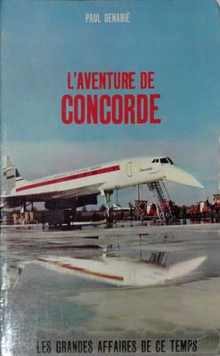
Ecrit peu avant le premier vol, cet ouvrage retrace les péripéties autour du programme du Concorde.
Quelques images en noir et blanc.
La grande aventure de Concorde - 1969- Jean Pierre Manel - Solar - 21x14 283p 
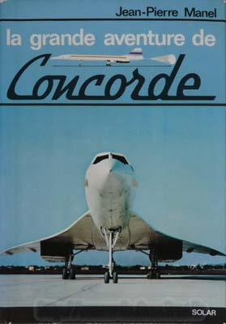 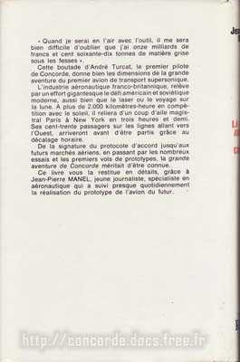 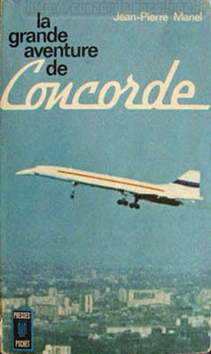
Ecrit également peu avant le premier vol, cet ouvrage retrace les étapes du programme du Concorde.
De nombreuses images en noir et blanc.
A gauche la première édition de 1969, et à droite celle de 1971 (Presse Pocket - 18x11 183p).
Est présenté au centre le texte en dos de couverture de la première édition.
La première phrase a profondement énervé André Turcat qui a démenti l'avoir prononcé,
et a fait imposer par la justice qu'elle soit retirée de l'édition suivante.
La grande aventure de Concorde - 1976 - Henri Ziegler - Grasset - 23x15 190p 
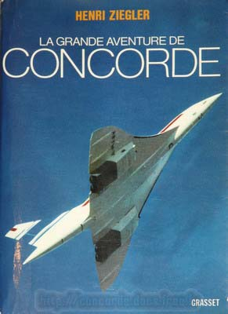
Même titre pour cet ouvrage écrit par le directeur de l'époque de Sud Aviation,
racontant la gestation difficile du Concorde.
Je trouve le narcissisme de l'auteur un peu pesant. Quelques photos noir et blanc rares.
Concorde essais et batailles - 1977 - André Turcat - Stock (Cherche midi) - 25x18 320p 
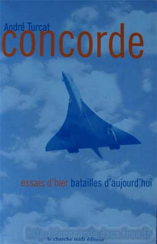 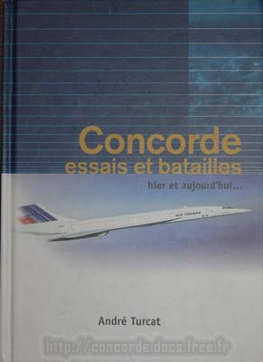
Raconté par le célèbre pilote d'essai André Turcat, la vie des équipages qui ont piloté
le premier prototype du Concorde. Un style très agréable à lire. Quelques photos couleurs.
L'exemplaire de droite fait partie d'une série limitée pour TMR, qui organisait des tours du monde en Concorde.
New shape in the sky - 1982 - Kenneth Owen - Jane's - 24x15 292p 
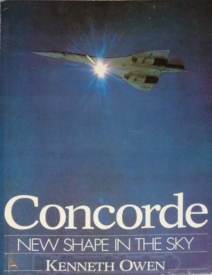
Ouvrage en Anglais, avec des photos inédites en noir & blanc. Livre très complet, décrivant
le développement du Concorde avec un oeil Britanique (qui est assez différent de celui de Toulouse).
The Concorde story - Christopher Orlebar - Osprey - 240p 
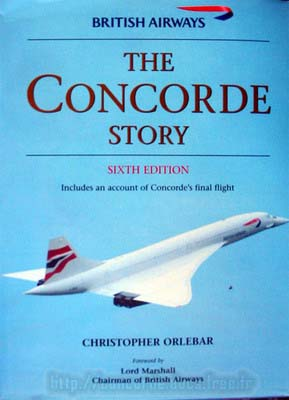
Concorde the inside story - Brian Trubshaw - 176p 
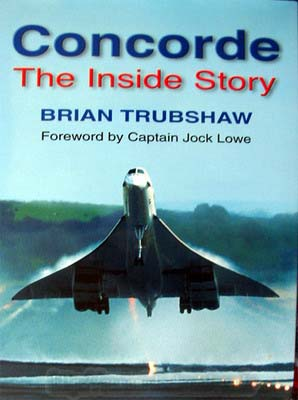
Ouvrage en Anglais, écrit par le pilote d'essai du Concorde 002 Anglais.
A comparer à l'ouvrage écrit par son homologue Français André Turcat.
Connaissance de l'histoire spécial Concorde - 1981 - 48p 
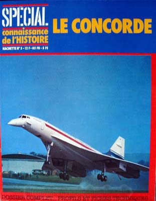
Intéressant pour les aspects historique de Concorde.
Celebrating Concorde - 1994 - Reginald Turnill - Ian Allan Publishing - 24x16 159p 
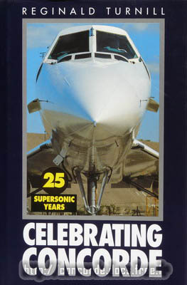
Livre en Anglais qui retrace le développement de Concorde.
De nombreuses photos en noir et blanc pour illustrer un ouvrage sans surprises.
Concorde the story the facts and the figures - 1969 - T E Blackall - G T Foulis & Co - 25x19 108p 
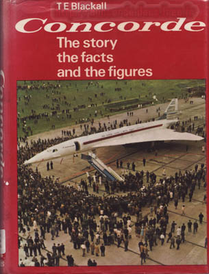
En Anglais, ce livre retrace d'un oeil assez technique le développement de Concorde.
Il contient de nombreux schémas et figures très intéressants, ainsi que de nombreuses photos en noir et blanc.
Concorde The inside story - 1976 - Geoffrey Knight - Butler&Tanner Lim - 23x15 174p 
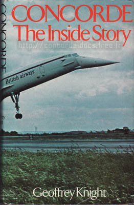
Encore un livre en Anglais qui retrace le développement de Concorde.
Quelques photos en noir et blanc dans un encart central.